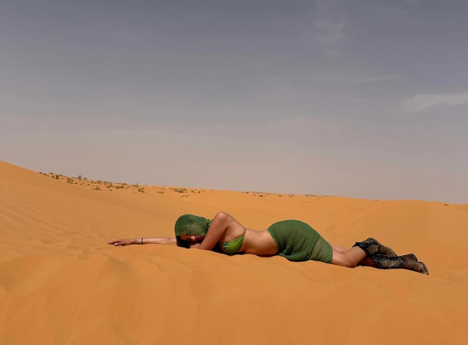
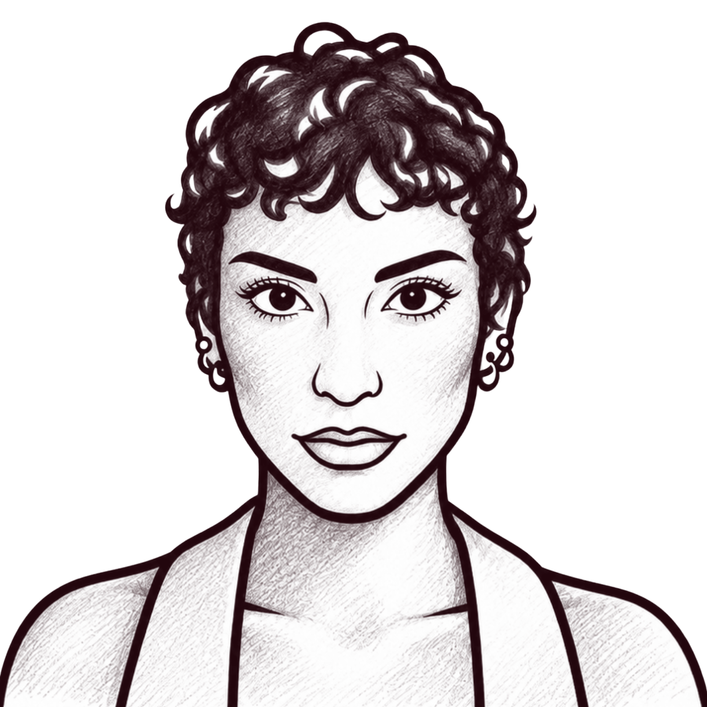
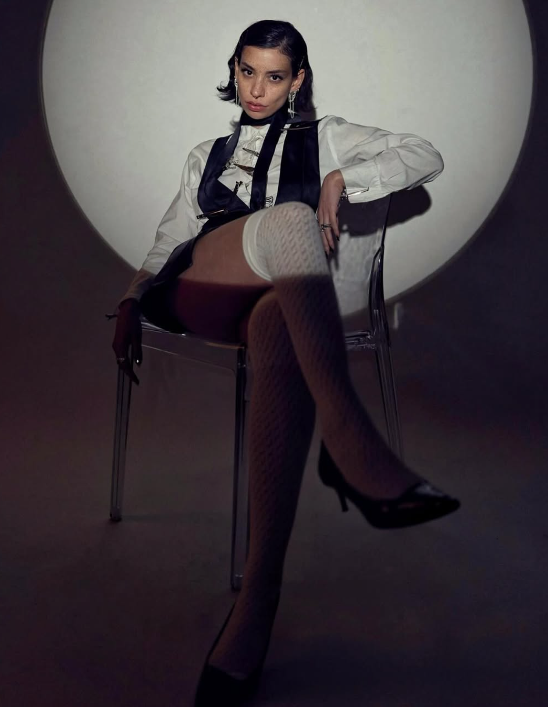
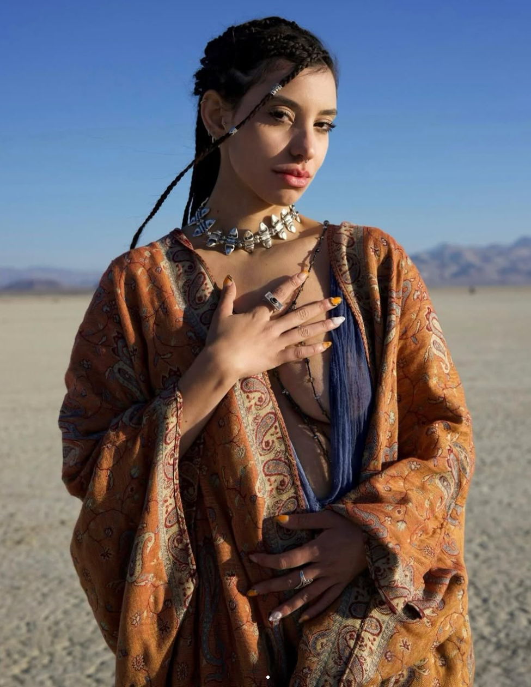
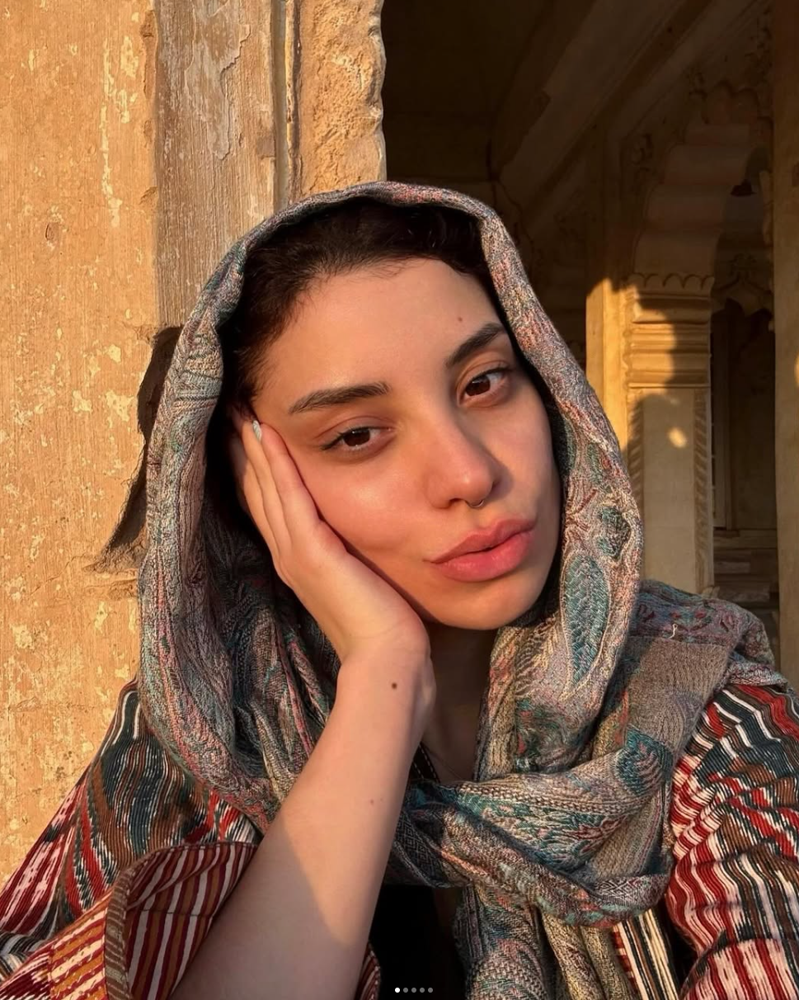
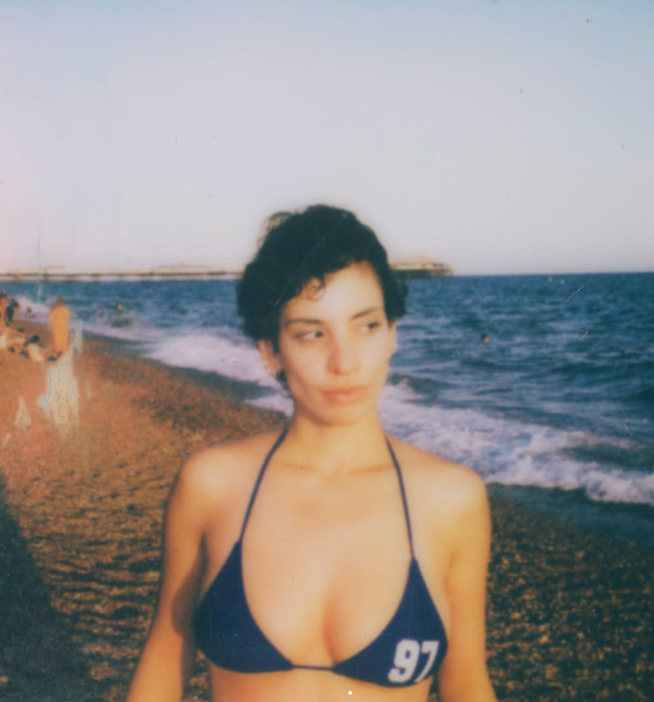

Filmmaker . Visual Storyteller
Based in Zurich & New York . Available Worldwide
Creative Direction . Cinematography . Casting

Fashion Film . Production . Storytelling

Editorial Campagin . Photography
Visual Concept . Direction

Music Video . Cinematography
Short Film . Visual Storytelling
I see fashion as a language — one that doesn't always need words. My work explores the space between bold expression, unexpected details and contemporary visual culture. Drawn to unconventional perspectives, striking silhouettes and the beauty of contrasts, I create imagery that challenges the ordinary and embraces individuality. I'm interested in what happens when fashion becomes more than something we wear — when it becomes an attitude, a statement, and a way of seeing the world. Always curious. Never confined to one perspective.
Campaign Development
Visual Concepts
Creative Strategy
Fashion Films
Commercial Content
Documentary
Casting
Location Scouting
Shoot Coordination